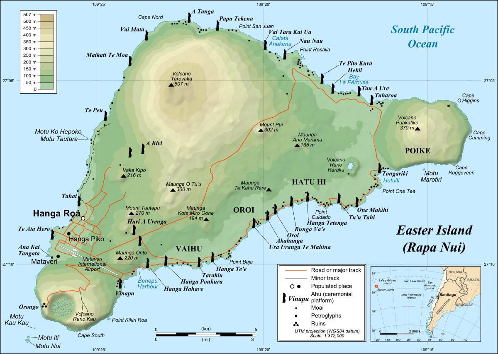
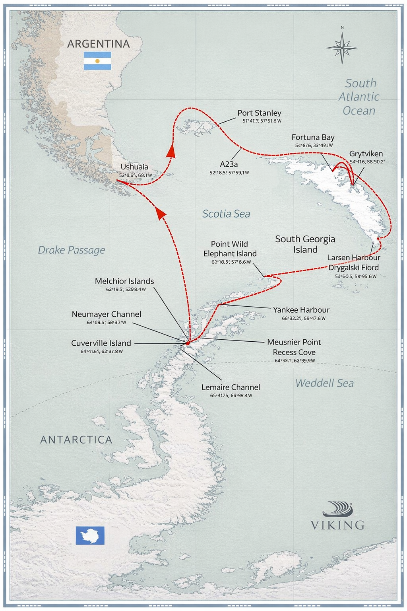
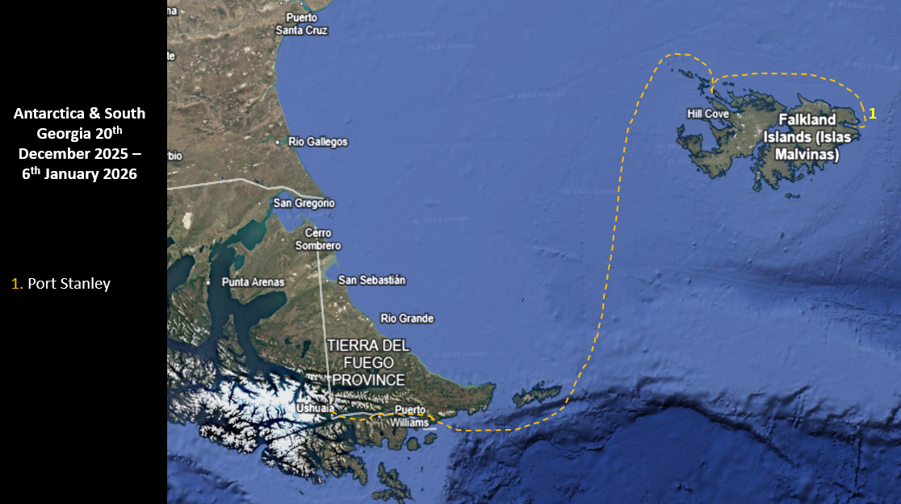
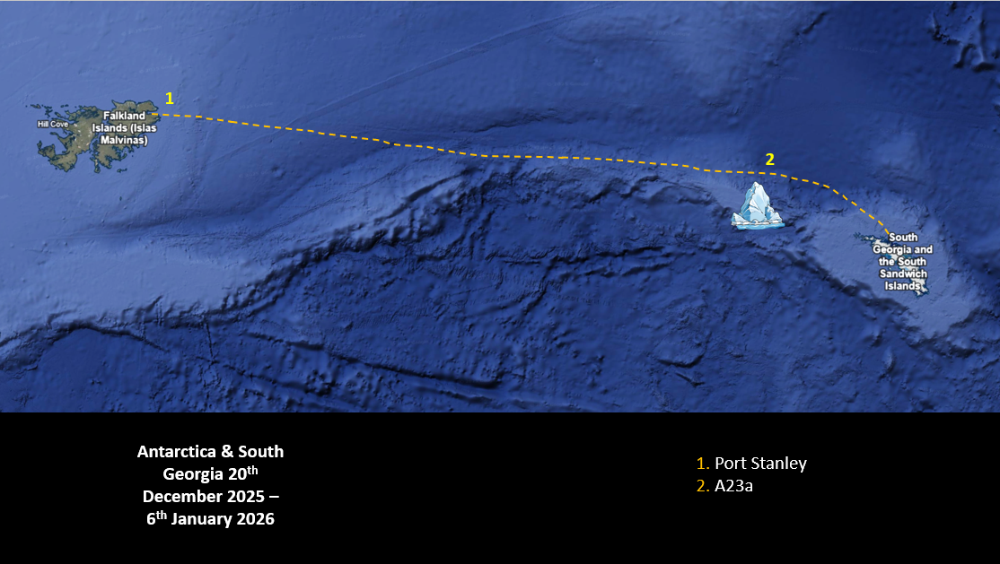
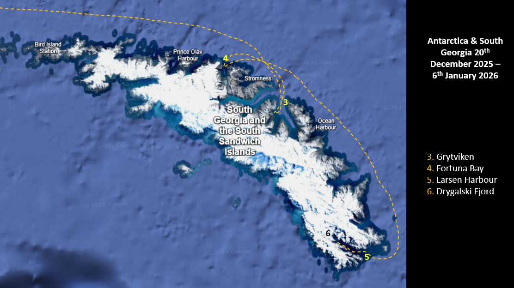
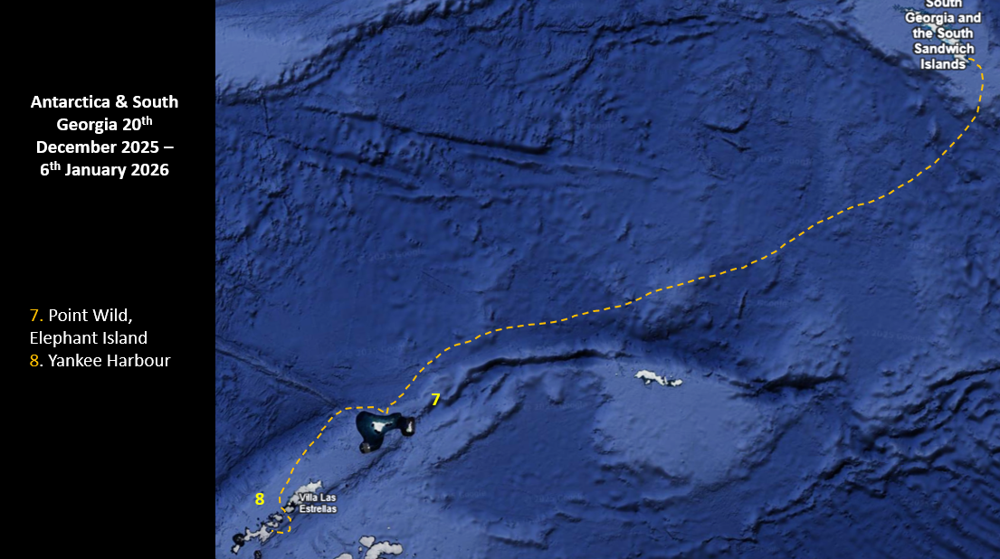
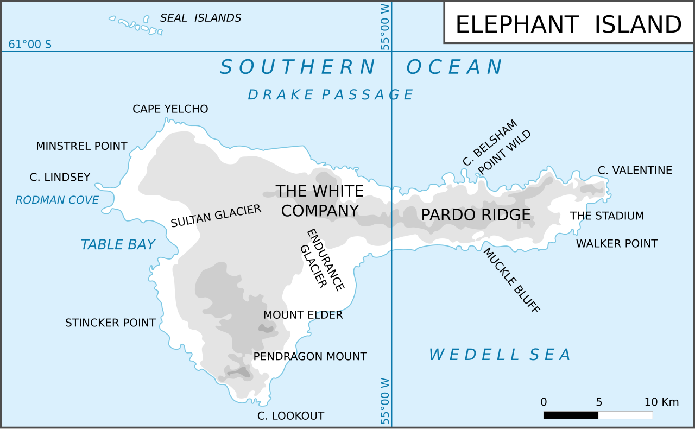
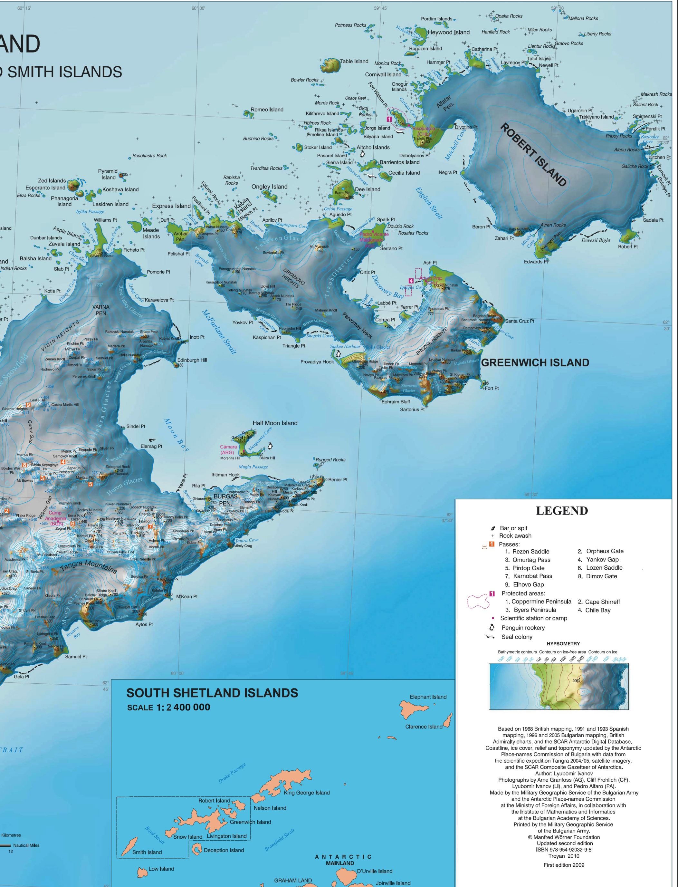
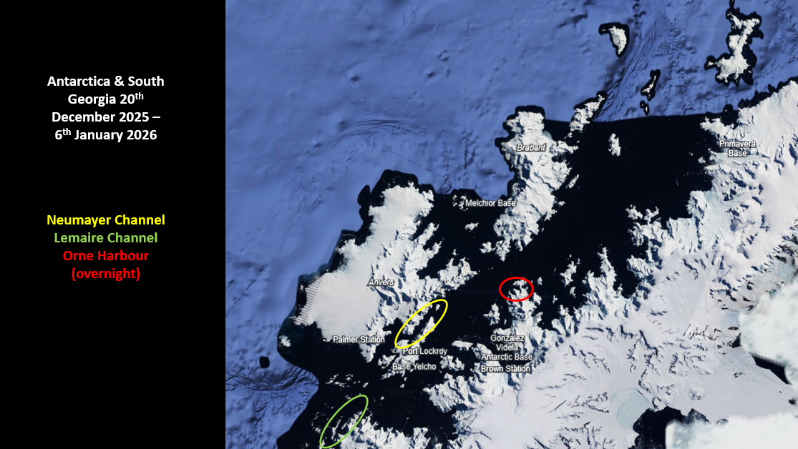
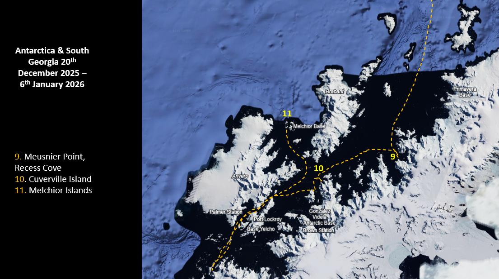

Set of maps, starting with one of the overall cruise, followed by more detailed maps of the cruise segments

Easter Island

Cruise overview

to the Falklands

to South Georgia

South Georgia Island

to Antarctica

Elephant Island

Greenwich Island

Antarctic regions

Antarctic itinerary